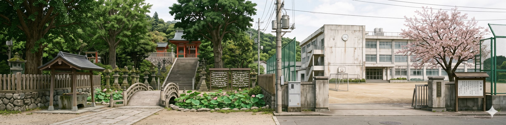
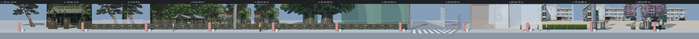
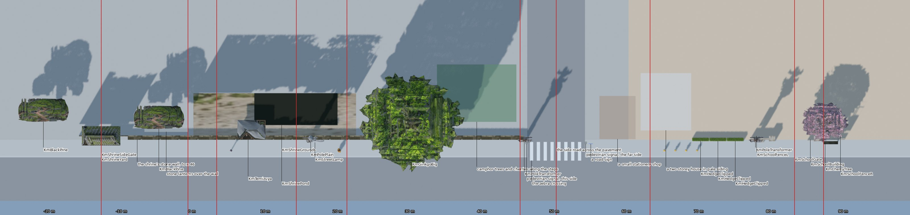

The last leg of route 1, from the shrine's side gate (where KM1-3 ended) along the shrine's east side, over the side road at the zebra crossing, to the school gate: the end of the route. It is laid out from your KM1-4 picture, in the order of its five lane pictures, for your approval.
Your picture is drawn in depth, unlike KM1-3's row of shop fronts: the bridge runs away from the camera and the stairs climb to the hall. So it is built in layers, each at its own depth and scale: the stone wall along the pavement, the pavilion just behind it, the pond and bridge 3.5 m back, the shrine's grounds (lanterns, stairs, hall, fortune racks, trees) 8 m back. On the school's side: its wall and gate on the street, the green fences behind, the building 33 m back across its sports ground. Each layer is scaled about the game camera's eye level, so from the camera they line up as in your picture; as the kid walks they slide past one another, and that is the depth.
Carved from your views: the big ginkgo (KM-G12), the cherry by the gate (KM-G16) and the lotus (KM-G22). The see-through boxes are what is still to come from the lane pictures: the trees along the steps, the shop and house past the crossing.

Each model at its real size and place, seen through the game camera as the game frames it, the play lane at the front. See-through boxes are what is still to come. The shading is Blender's, not the game's toon look: judge the places, sizes, order and gaps.


| x (m) | What happens |
|---|---|
| -12 | start: out of the shrine's side gate (where KM1-3 ended) |
| 0 | pigeons and turtle doves on the pavement (KM-N07, N20, GroundBird): they burst up as the ball comes |
| 4 | shrine visitors along the wall, both ways, to x 30 (Pedestrian): get by without the ball touching one |
| 15 | a grey heron at the pond's edge (KM-N15) lifts off slowly as the kid passes; koi under the lotus, a turtle on a stone, a swallowtail and a red dragonfly over it (KM-N12 to N14, N25, N26) |
| 22 | checkpoint |
| 46 | checkpoint at the corner |
| 51 | the zebra crossing over the side road: wait for the green man while the cars pass (M5: Crossing) |
| 64 | first-graders walking to school in a line ahead, to x 80 (FirstGraderLine): get past without the ball touching one |
| 84 | the school gate: the end of the leg and of route 1 |
| 88 | a white-eye in the cherry (KM-N18) |
| x (m) | Model | Why there |
|---|---|---|
| -20.0 | KmBlackPine | a black pine behind the start (the kit's, until KM1-4a) |
| -12.0 | KmShrineSideGate | the shrine's side gate (KM-B12): the stop the leg starts from |
| -12.0 | KmShrineYard | the shrine's yard behind it |
| -7.0 | KmShrineWall | the shrine's low stone wall |
| -4.4 | KmShrineWallB | the shrine's low stone wall (mirrored) |
| -4.0 | KmBlackPine | a black pine over the wall between the gate and the grounds (the kit's, until KM1-4a) |
| -1.8 | KmShrineWall | the shrine's low stone wall |
| 0.8 | KmShrineWallB | the shrine's low stone wall (mirrored) |
| 3.4 | KmShrineWall | the shrine's low stone wall |
| 6.0 | KmShrineWallB | the shrine's low stone wall (mirrored) |
| 8.3 | KmTemizuya | the purification pavilion (KM-B13) just behind the wall |
| 8.7 | KmShrineWall | the shrine's low stone wall |
| 11.3 | KmShrineWallB | the shrine's low stone wall (mirrored) |
| 13.0 | KmShrinePond | the lotus pond and the arched bridge (a layer 3.5 m back) |
| 13.0 | KmShrineGrounds | the shrine's grounds: lanterns, stairs, hall, racks, trees (a layer 8 m back), the gravel in front |
| 13.9 | KmShrineWall | the shrine's low stone wall |
| 16.5 | KmShrineWallB | the shrine's low stone wall (mirrored) |
| 17.0 | KmPolePlain | its pole |
| 17.6 | KmStreetLamp | a street lamp at the wall (KM1-4b: on the pavement side, kept behind the lane: E10) |
| 19.1 | KmShrineWall | the shrine's low stone wall |
| 21.7 | KmShrineWallB | the shrine's low stone wall (mirrored) |
| 24.3 | KmShrineWall | the shrine's low stone wall |
| 26.9 | KmShrineWallB | the shrine's low stone wall (mirrored) |
| 29.5 | KmShrineWall | the shrine's low stone wall |
| 31.0 | KmGinkgoBig | a big old ginkgo over the wall by the steps (KM-G12, carved from its views), its trunk 4 m behind the lane |
| 32.1 | KmShrineWallB | the shrine's low stone wall (mirrored) |
| 34.8 | KmShrineWall | the shrine's low stone wall |
| 37.4 | KmShrineWallB | the shrine's low stone wall (mirrored) |
| 40.0 | KmShrineWall | the shrine's low stone wall |
| 42.6 | KmShrineWallB | the shrine's low stone wall (mirrored) |
| 45.2 | KmShrineWall | the shrine's low stone wall |
| 46.6 | KmPoleTransformer | the pole at the shrine's corner |
| 71.0 | KmHedgeClipped | the clipped hedge along the school (KM-G21) |
| 73.4 | KmHedgeClipped | the hedge |
| 75.8 | KmHedgeClipped | the hedge |
| 78.6 | KmPoleTransformer | the pole at the school wall's end |
| 78.8 | KmSchoolFenceL | the green ball-stop fence behind the wall, left |
| 84.0 | KmSchoolGate | the school's wall, gate pillars, folded gate and notice board: the end |
| 86.2 | KmSchoolBuilding | the school across its sports ground (its face 33 m back) |
| 88.3 | KmCherryTree | the cherry in blossom by the gate (KM-G16) |
| 90.4 | KmSchoolFenceR | the ball-stop fence, right |
| -3.0 | (to come) | stone lanterns over the wall (KM1-4a) |
| 40.0 | (to come) | camphor trees and cherries along the steps (KM1-4c) |
| 46.9 | (to come) | pedestrian signal, this side (green and red figures) |
| 47.6 | (to come) | the zebra crossing |
| 48.6 | (to come) | zebra stripe |
| 49.5 | (to come) | zebra stripe |
| 50.5 | (to come) | zebra stripe |
| 51.0 | (to come) | the side road across the pavement |
| 51.4 | (to come) | zebra stripe |
| 52.4 | (to come) | zebra stripe |
| 53.3 | (to come) | zebra stripe |
| 54.2 | (to come) | zebra stripe |
| 55.1 | (to come) | pedestrian signal, the far side |
| 55.8 | (to come) | a road sign |
| 59.5 | (to come) | a small stationery shop (KM1-4d) |
| 66.2 | (to come) | a two-storey house in pale siding (KM1-4d) |